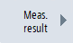
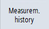
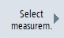
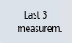

You have the option of displaying the measurement history as measurement curve.
Requirement
Displaying measurement history as measurement curve
|  | 1. | Press the "Meas. result" softkey. |
| | | |
|  | 2. | Press softkey "Measurement history". The current measurement (if available) as well as a maximum of the three last saved measurements (depending on the setting in "Select measurements") are displayed as measurement curve. You can zoom in or zoom out of the curve that is displayed using the zoom function. You can also shift the curve that is displayed. |
|   | 3. | Press softkey "Select measurements" to graphically display additional measurements. Select those measurements that you would like to display in addition to the actual measurement. - OR - Press softkey "Last 3 measurements" to graphically display the 3 measurements that were last saved. In this case, 3 measurement curves with different colors are shown together with the measurement time. |
| | 4. | Press softkey "Measurement history" again. All selected measurements are shown as measurement curve. |